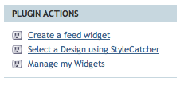
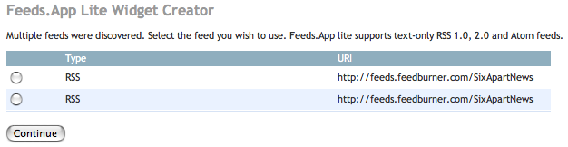

Feeds.App Lite makes it simple to add RSS and/or Atom feed content from other sites to your published blog.
The plugin currently requires static publishing of the template which includes the Feeds.App Lite tags or feed widget.
Feeds.App Lite was created by Timothy Appnel for distribution with Movable Type and Movable Type Enterprise and provide a basic subset of the functionality found in Feeds.App, a commercial plugin for more advanced uses of syndicated content.
To create a feed using Feeds.App Lite, navigate to the template listing or main menu of the blog into which you wish to include the feeds. Click on the "Create a feed widget" link found in the Plugin Actions section of either page to launch the Feeds.App Lite Widget Creator.

On the resulting page, enter the full URL to the feed. In many cases, you may be able to enter just the URL of a blog or a page containing a link to the feed. In this case, Feeds.App Lite will auto-discover the available feeds.
The available feed or feeds will be displayed in a list on the resulting page. Select the one you would like to use.

On the next page, you have the opportunity to give the feed a custom name for display on your blog and to choose the maximum number of feed items that should be displayed from it.

Upon clicking "Save", the feed widget will be created. Feeds widgets are WidgetManager-compatible template modules that can be included into your template either via WidgetManager or using the MTInclude tag.

When the feed widget is included into a statically-published template and that template is rebuilt, Feeds.App Lite automatically retrieves the latest version of a feed for inclusion onto the published page. The feed content is cached locally and only updated when the template is rebuilt and the feed content has changed.
WARNING: The use of caching and "conditional requests" greatly reduces the overhead on publishing performance. However, it should be noted that having a large number of feeds will adversely impact your publishing times.
If you prefer to create feeds without using the Feeds.App Lite Widget Creator, you can do so using the template tags provided by the plugin. Although we briefly describe each tag below, examples of usage can be seen by creating a single feed widget.
NOTE: Items shown in square brackets ([ ]) are optional attributes.
A container tag representing a syndication (RSS or Atom) feed. The uri argument is required and should be the URI of the feed. Supported protocols are http://, https:// and file://.
The title of the remote feed. This tag is not required and can be omitted if you wish to use a custom title in the display of the feed on your blog.
The URL of the syndication feed. When multiple links exist Feeds.App Lite will selects the first link with a relationship of "alternate" (rel="alternate) or where no relationship has been defined.
A container tag that will loop through the entries of the feed in
context. Like MTEntries this tag supports optional arguments of
limit and offset to control the number entries and starting
point to be inserted. Entries are returned in the order that they
appear in the feed.
The title of the feed entry in context within the MTFeedEntries loop.
The URL of the feed entry in context within the MTFeedEntries loop.
This tag does all of the work of previous tags and is a one-line feed widget. The tag will output a generic unordered list of title and
links from the feed entries. As with MTFeed, the uri argument is required. The lastn argument is optional and controls the maximum number of items to display.